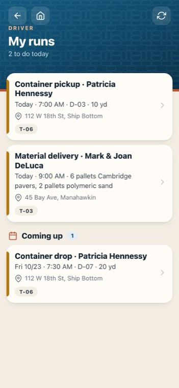
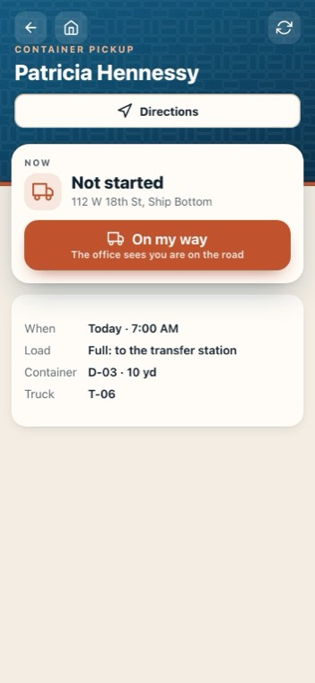
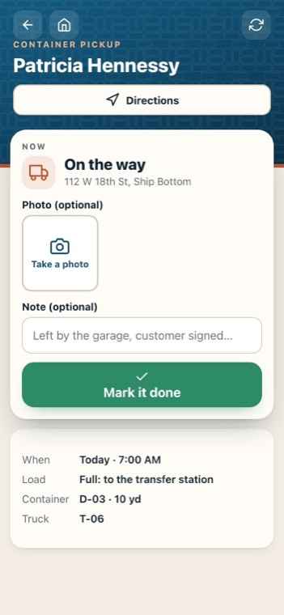
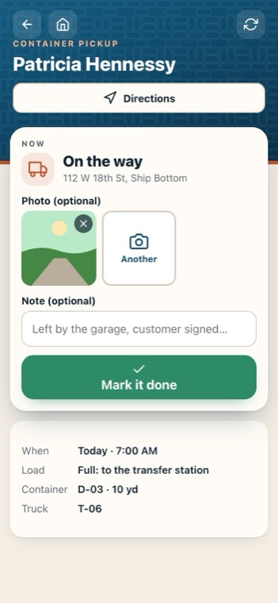

The driver's runs: deliveries and containers
On the crew phone app: Jersey Shore Pavers — Crew.
-

1My runs
Deliveries, container drops, pickups and swaps, today first.
-

2The run
When, the load, the container and the truck, with Directions.
-
 3
3On my way
The office sees you are on the road.
-

4A photo
Where you left it.
-

5Mark it done
Pick the container that went out if it asks, add a note, and mark it done.